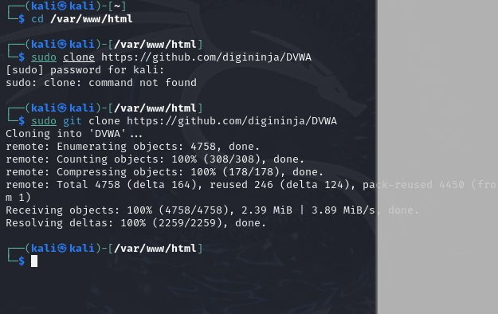
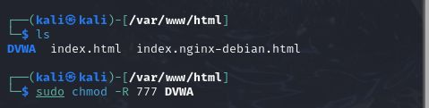
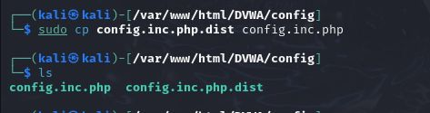
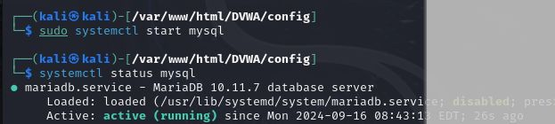
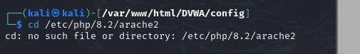
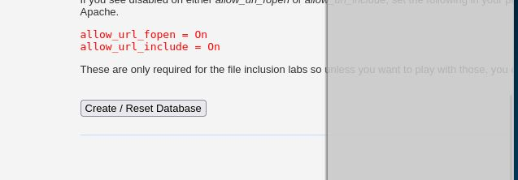

# Выполнение лабораторной работы Мы настроили
DVWA, Apache и базу данных, поэтому открываем браузер и запускаем
веб-приложение, введя 127.0.0/DVWA (рис. 14)
# Выполнение лабораторной работы Мы настроили
DVWA, Apache и базу данных, поэтому открываем браузер и запускаем
веб-приложение, введя 127.0.0/DVWA (рис. 14)Приобретение практических навыков по установке DVWA.
Настройка DVWA происходит на нашем локальном хосте, поэтому нужно
перейти в директорию /var/www/html. Затем клонирую нужный
репозиторий GitHub (рис. 1).
 # Выполнение лабораторной работы Проверяю, что файлы склонировались правильно, далее повышаю права доступа к этой папке до 777 (рис. 2.)
 # Выполнение лабораторной работы Чтобы
настроить DVWA, нужно перейти в каталог /dvwa/config, затем
проверяю содержимое каталога (рис. 3)
Создаем копию файла, используемого для настройки DVWA
config.inc.php.dist с именем config.inc.php.
Копируем файл, а не изменяем его, чтобы у нас был запасной вариант, если
что-то пойдет не так (рис. 4)
 # Выполнение лабораторной работы Далее открываю файл в текстовом редакторе (рис. 5)
Изменяю данные об имени пользователя и пароле (рис. 6)
По умолчанию в Kali Linux установлен mysql, поэтому можно его запустить без предварительного скачивания, далее выполняю проверку, запущен ли процесс (рис. 7)
 # Выполнение лабораторной работы Авторизируюсь в базе данных от имени пользователя root. Появляется командная строка с приглашением “MariaDB”, далее создаем в ней нового пользователя, используя учетные данные из файла config.inc.php (рис. 8)
Теперь нужно пользователю предоставить привилегии для работы с этой базой данных (рис. 9)
Необходимо настроить сервер apache2, перехожу в соответствующую директорию (рис. 10)
 # Выполнение лабораторной работы
В файле php.ini нужно будет изменить один параметр, поэтому
открываю файл в текстовом редакторе (рис. 11)
В файле параметры allow_url_fopen и allow_url_include должны быть
поставлены как On (рис. 12)
Запускаем службу веб-сервера apache и проверяем, запущена ли служба (рис. 13)
# Выполнение лабораторной работы Мы настроили
DVWA, Apache и базу данных, поэтому открываем браузер и запускаем
веб-приложение, введя 127.0.0/DVWA (рис. 14)
Прокручиваем страницу вниз и нажимем на кнопку
create\reset database (рис. 15)
 # Выполнение лабораторной работы Авторизуюсь с помощью предложенных по умолчанию данных (рис. 16)
Оказываюсь на домшней странице веб-приложения, на этом установка окончена (рис. 17)
Приобрела практические навыки по установке уязвимого веб-приложения DVWA.